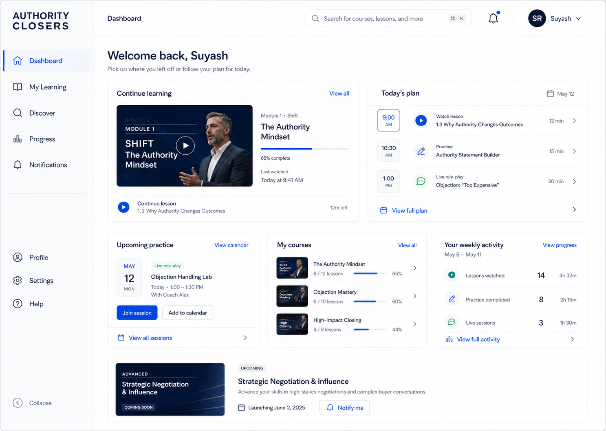
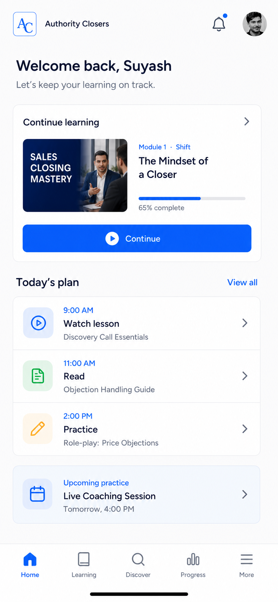
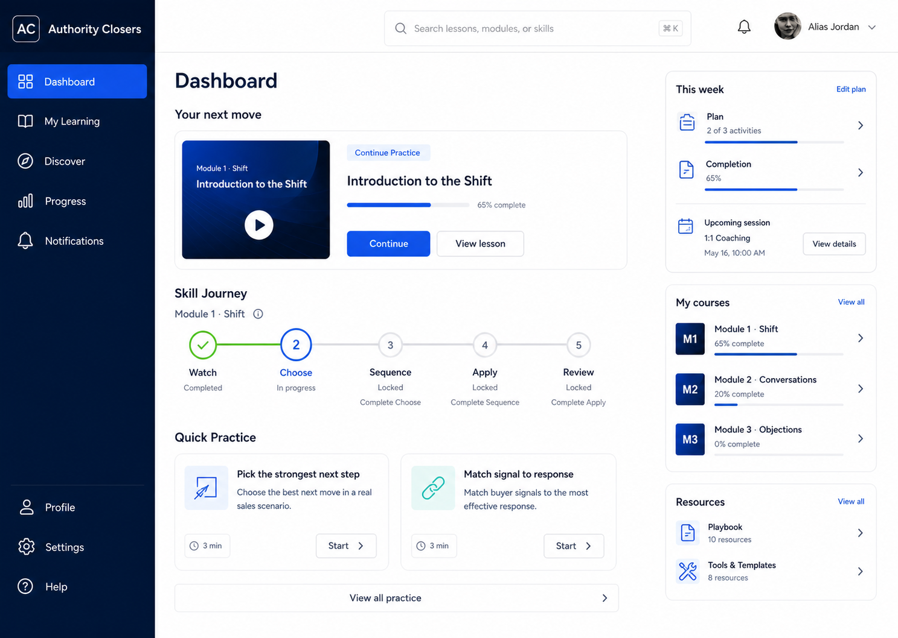
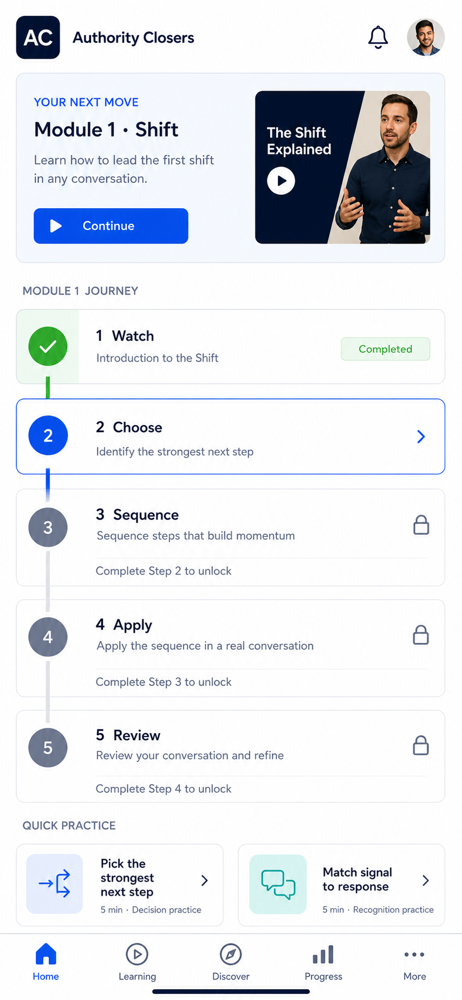
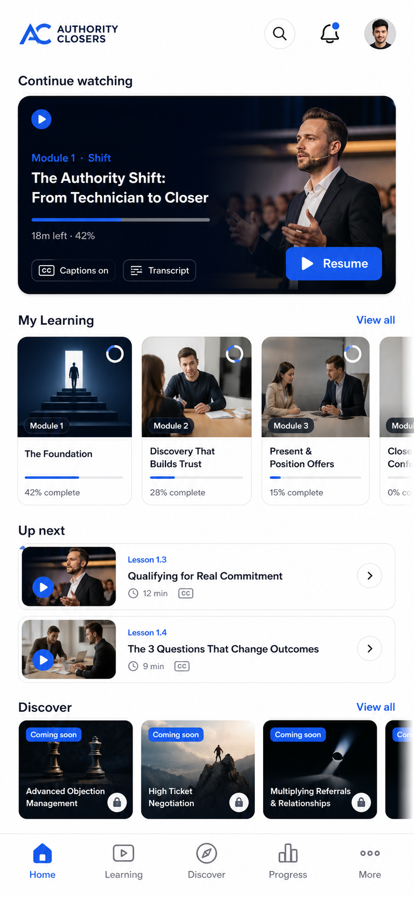
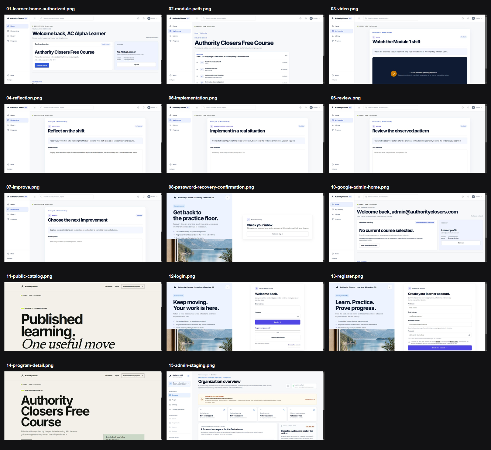
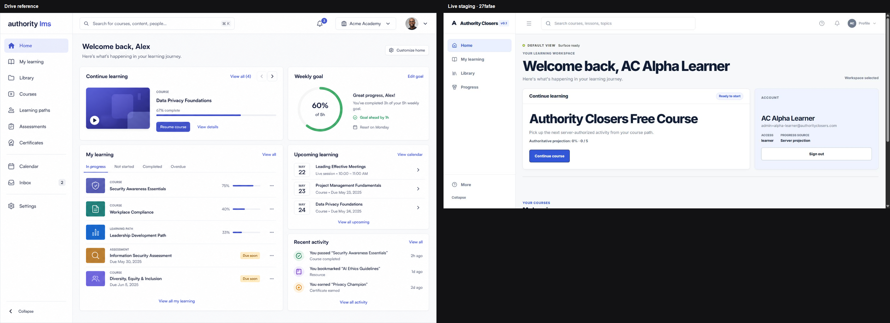

Resume learning
Dashboard → Continue → Activity → evidence → next activity.
AC-WF-LEARNER-V1 · Visual source of truth
One place for the generated desktop/mobile directions, the selected end-to-end product flow, current implementation evidence, and production source files.
Generated references packaged · production QA still activeEnd-to-end map
The same controlled workflow package used by implementation.
Dashboard → Continue → Activity → evidence → next activity.
Discover → Program detail → eligibility → start → My Learning.
Watch → Choose → Sequence → Apply → Review.
Profile → edit → validation → revision → refresh.
Profile/More → Settings → section → validate → save.
Progress → course/range → canonical completion → activity.
Bell/More → Notifications → deep link → owned surface.
Activity → delivery adapter → player → evidence → progress.
Generated visual package
Click any screen to open its full-resolution PNG.


Used for: light application shell, sidebar/header, Dashboard hierarchy, account menu, notifications, Profile, Settings, and mobile bottom navigation.


Used for: My Learning, module progression, explicit complete/current/locked states, and future deterministic choice, ordering, matching, branching, evidence-chip, and confidence interactions.

Used after media APIs exist: dedicated 16:9 player, captions/transcript/resume, restrained Discover artwork, and provider-neutral VPS-origin → CDN delivery.
Implementation evidence
Implementation/staging evidence—not generated design directions.


Production implementation
Shared shell, runtime family, skeletons, routes, and the clarity stylesheet.
{kind=link}
{kind=link}
{kind=link}
{kind=link}
{kind=link}
{kind=link}
{kind=link}
{kind=link}